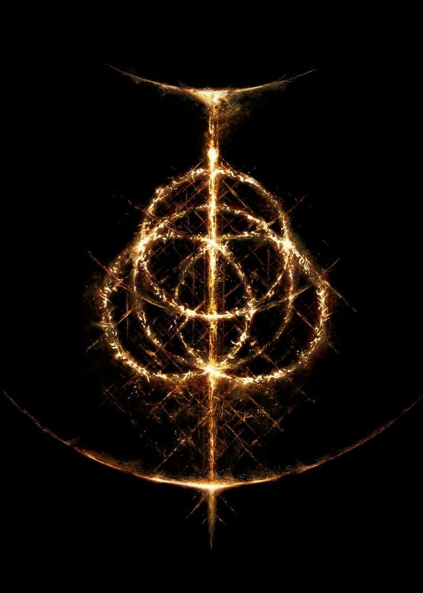
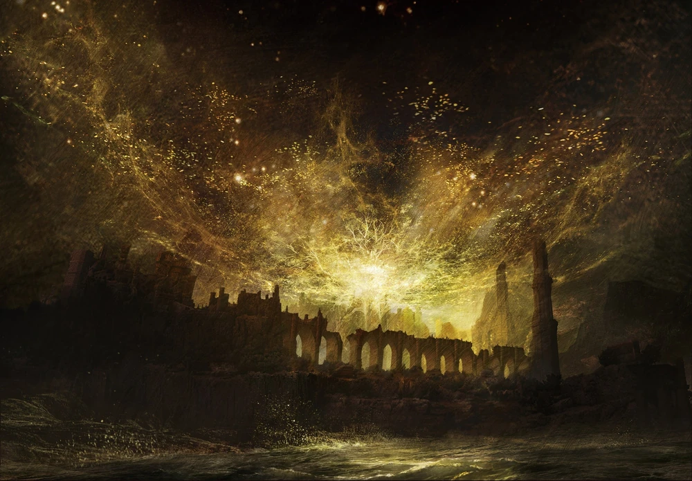
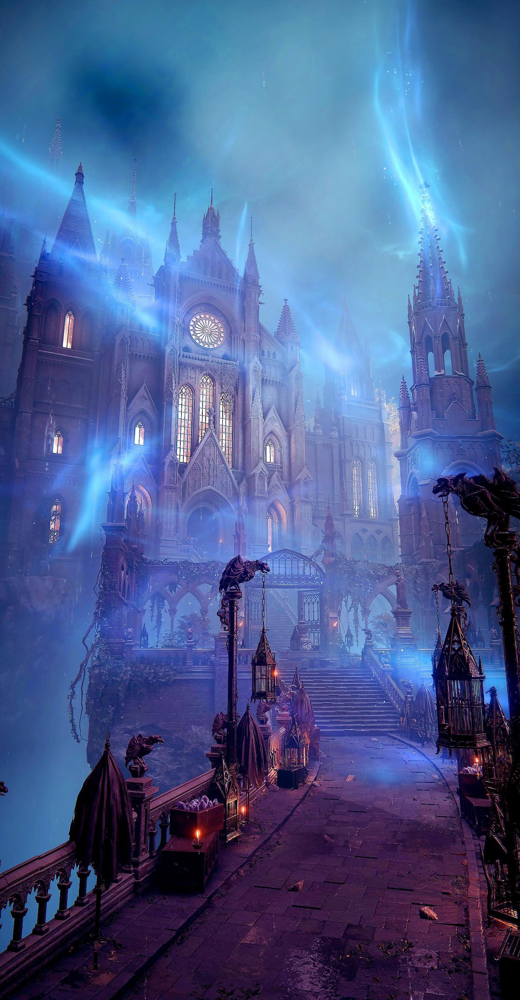
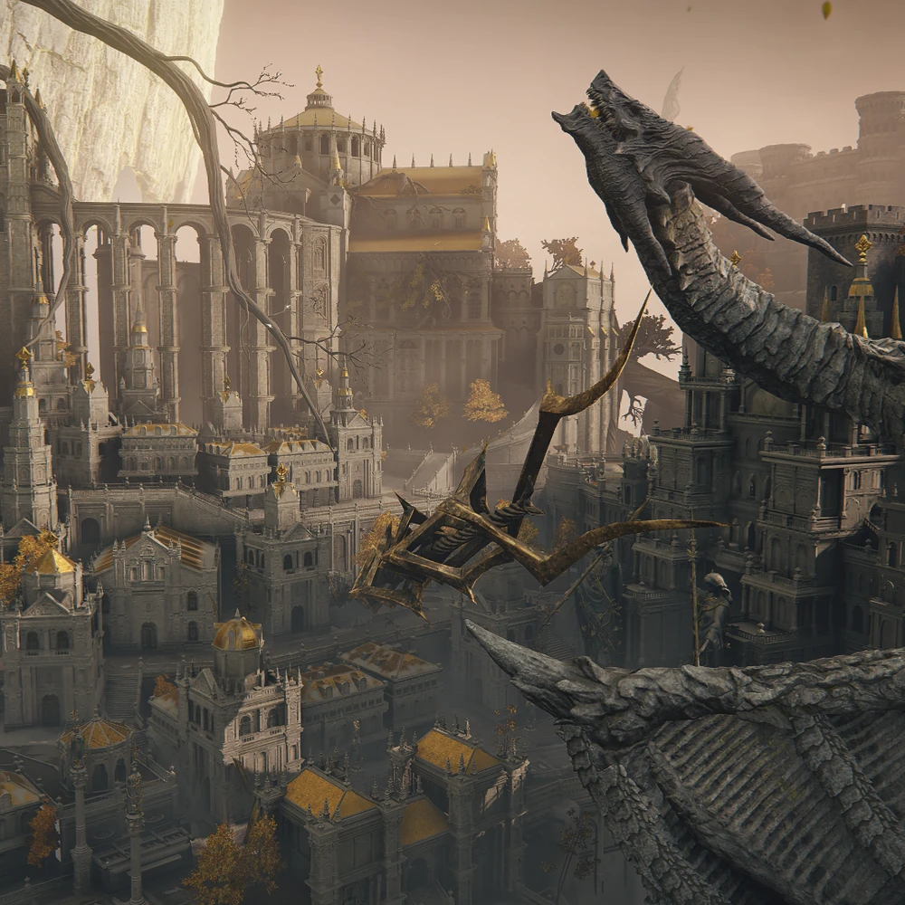

"Восстань, Погасшая душа! Междуземье ждёт своего повелителя. Пусть благодать приведёт тебя к Кольцу Элден."

Как и в играх серии Dark Souls, Elden Ring представляет собой фэнтезийную игру в
сеттинге западного средневековья. Действие игры происходит в Междуземье — стране, которой правит
Королева Марика Вечная. В прошлом, жизнь Междуземья зависела от Кольца Элден, из которого
произрастает Мировое древо. Они оба наделяли земли «золотым светом» — особого рода благодатью,
посылаемой всем обитателям этой страны, великим и малым. Носители света узнавали друг друга по
свету
в глазах, а
тех, кто утратил свет благодати, называли Погасшими и изгоняли прочь — среди этих изгнанников
были и предки игрового персонажа
Когда Кольцо было разбито, полубоги-герои, потомки Марики, разделили между собой его осколки, известные как Великие руны. Они получили огромные силы — каждый свои, но присущая этим обломкам порча свела их с ума, и они вступили в междоусобную войну, известную как Раскол. Протагонист — Погасший — был в прошлом изгнан из Междуземья в далёкие края, но после того, как Кольцо Элден было разбито, он услышал путеводный зов, направленный обратно, и ощутил утраченную его предками благодать. Герой возвращается, чтобы заполучить силу Кольца Элден и самому стать владыкой.
Когда Кольцо было разбито, полубоги-герои, потомки Марики, разделили между собой его осколки, известные как Великие руны. Они получили огромные силы — каждый свои, но присущая этим обломкам порча свела их с ума, и они вступили в междоусобную войну, известную как Раскол. Протагонист — Погасший — был в прошлом изгнан из Междуземья в далёкие края, но после того, как Кольцо Элден было разбито, он услышал путеводный зов, направленный обратно, и ощутил утраченную его предками благодать. Герой возвращается, чтобы заполучить силу Кольца Элден и самому стать владыкой.
"Там, за туманом, у нас дома — в Междуземье.
Рассказчик"

В те времена по всему миру поклонялись Древу Эрд и его Богине-Королеве. Однако в один момент Кольцо Элден разбилось. Междуземье покинула жизнь, а болезням и страданиям не было конца. Полубоги, отпрыски исчезнувшей королевы, в ходе своих конфликтов разбили огромную и процветающую империю на хрупкие фрагменты. В Междуземье больше не осталось обычных людей, сохранивших здравый рассудок: этот мир населяли лжецы и безумцы.
Но теперь сюда возвращаются Погасшие из моря Тумана, ведомые когда-то утерянной благодатью, зовом Междуземья, чтобы спасти свой умирающий дом. Они будут искать Кольцо Элден, даже нарушив Золотой Порядок. Ведь Междуземье нуждается в переменах. Это мир, находящийся в руинах, где страданиям и отчаянию не будет конца, но жизнь не сдаётся и продолжается. И такова его печальная красота.
Междуземье
Когда-то давным-давно вся жизнь возникла из Горнила, считавшегося тогда божественным, а Междуземьем правили древние драконы, которым поклонялись люди. Но потом этот континент был объединён в единую империю усилиями королевы Марики Вечной[5] и Междуземье озарил чистый свет Великой Воли. Кольцо Элден и Золотой Порядок дарили людям процветание, счастье и благодать, что озаряла глаза жителей.В те времена по всему миру поклонялись Древу Эрд и его Богине-Королеве. Однако в один момент Кольцо Элден разбилось. Междуземье покинула жизнь, а болезням и страданиям не было конца. Полубоги, отпрыски исчезнувшей королевы, в ходе своих конфликтов разбили огромную и процветающую империю на хрупкие фрагменты. В Междуземье больше не осталось обычных людей, сохранивших здравый рассудок: этот мир населяли лжецы и безумцы.
Но теперь сюда возвращаются Погасшие из моря Тумана, ведомые когда-то утерянной благодатью, зовом Междуземья, чтобы спасти свой умирающий дом. Они будут искать Кольцо Элден, даже нарушив Золотой Порядок. Ведь Междуземье нуждается в переменах. Это мир, находящийся в руинах, где страданиям и отчаянию не будет конца, но жизнь не сдаётся и продолжается. И такова его печальная красота.
"Встречалось ли тебе здание, что возвышается над водой на севере? Это академия Райи Лукарии. Там мы изучаем магию блестящих камней."

Академия соединяла два тракта, Беллума и Лиурнии, своими мостами, и рядом с ней находились кристальные туннели, пещеры и леса. Внутри Райи Лукарии были классные комнаты, залы для прений, храмы, посвящённые Кукушке, большие водяные колёса, а также Великая библиотека. Величественные башни Райи Лукарии изящно возвышались из центра огромного озера Лиурнии, средоточия магии и войны
Но откуда явились маги блестящих камней и их силы?
История Академии Райи Лукарии
Знаменитая, возвышающаяся над водой Академия Райи Лукарии, край ярчайших звёзд и священный храм волшебства, и город у её подножия, с храмовым кварталом, были основаны в Озёрной Лиурнии, на севере туманного региона, магами блестящих камней для изучения космического янтаря — блестящего камня, источника силы самих звёзд, откуда маги черпают свою магическую силу. Именно в академии можно было обучиться магии блестящих камней.Академия соединяла два тракта, Беллума и Лиурнии, своими мостами, и рядом с ней находились кристальные туннели, пещеры и леса. Внутри Райи Лукарии были классные комнаты, залы для прений, храмы, посвящённые Кукушке, большие водяные колёса, а также Великая библиотека. Величественные башни Райи Лукарии изящно возвышались из центра огромного озера Лиурнии, средоточия магии и войны
Но откуда явились маги блестящих камней и их силы?
Магия блестящих камней
Магия блестящих камней — это изучение звёзд и их жизни, и как известно чародеи подчинялись законам, что противоречили Золотому Порядку. Чары, как правило, опираются на природу звёзд и правилам, которым подчиняются даже планеты. Маги считали, что звёзды ведают судьбами людей, и изучая небесные тела и жизнь на них чародеи пришли к некоторым выводам: давным-давно они были звёздной пылью, что образовалась после мощного взрыва в бездонной глубине небес. Некоторые считали, чтобы стать стать великим магом, им нужно воспевать усеянное созвездиями небо и чудесную звёздную пыль.

Его правителями были королева Марика Вечная и её первый муж Годфри, а также второй муж Радагон, повелители Элдена. Столичные аристократы являлись представителями великого дома Древа Эрд из Лейнделла, а большинство полубогов, что там жили, были частью золотого рода. Великий тронный зал стоял прямо около входа в само Древо.
Однажды древние драконы, предки современных, напали на Лейнделл, столицу королевства. Древний дракон Грансакс обрушился грозой на столицу. Во время штурма стены Лейнделла пали — единожды за всю его историю. Это событие ознаменовало начало Войны против древних драконов. И по сей день тело Грансакса лежит в Лейнделле. Война же закончилась примирением обеих сторон благодаря дружбе Годвина Золотого и Фортисакса, и вскоре в Лейнделле образовался столичный культ древних драконов
Лейнделл, столица королевства
Лейнделл, столица королевства — крупнейший город Междуземья и столица королевства Древа Эрд, от чего его иногда называют городом Древа Эрд. Он был построен давным-давно на востоке плато Альтус у подножия Древа и был окружён двумя великими бастионами, лишь единожды удалось пробить брешь в его внутренних стенах. Этот прекрасный золотой город купался в ярких лучах Древа Эрд, Лейнделл поражал своим великолепием любого, кто осмеливался пробраться за внутреннюю стену. От нижней части города с его огромной канализацией до верхушек золотых башен он являлся символом богатства и процветания всего Золотого Порядка.Его правителями были королева Марика Вечная и её первый муж Годфри, а также второй муж Радагон, повелители Элдена. Столичные аристократы являлись представителями великого дома Древа Эрд из Лейнделла, а большинство полубогов, что там жили, были частью золотого рода. Великий тронный зал стоял прямо около входа в само Древо.
Однажды древние драконы, предки современных, напали на Лейнделл, столицу королевства. Древний дракон Грансакс обрушился грозой на столицу. Во время штурма стены Лейнделла пали — единожды за всю его историю. Это событие ознаменовало начало Войны против древних драконов. И по сей день тело Грансакса лежит в Лейнделле. Война же закончилась примирением обеих сторон благодаря дружбе Годвина Золотого и Фортисакса, и вскоре в Лейнделле образовался столичный культ древних драконов